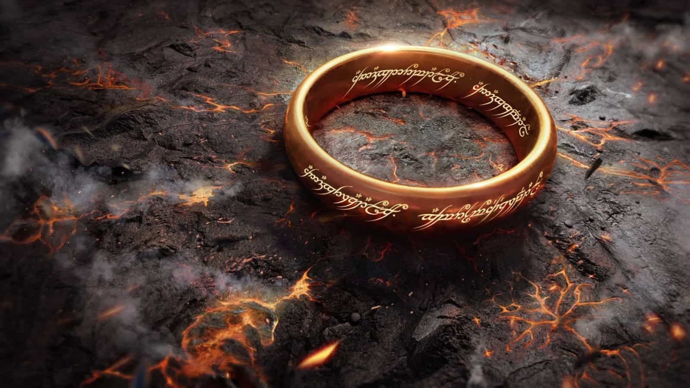
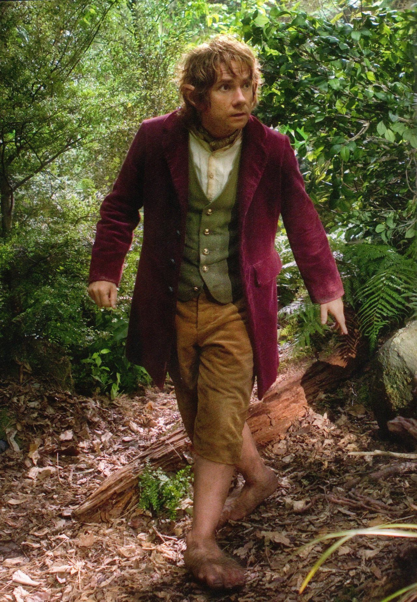
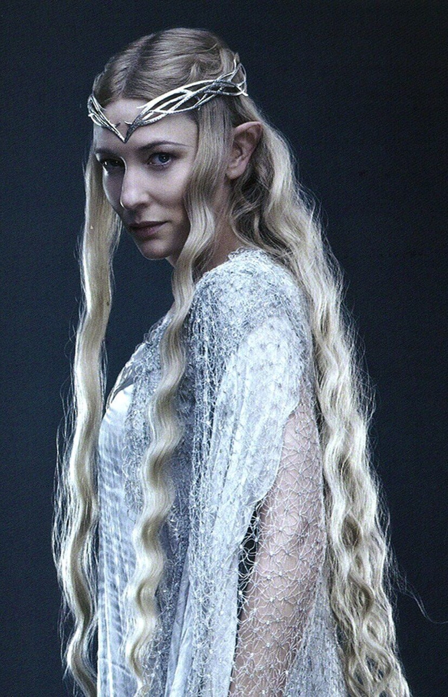
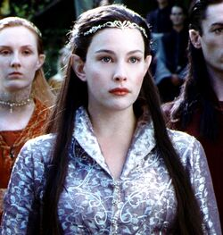
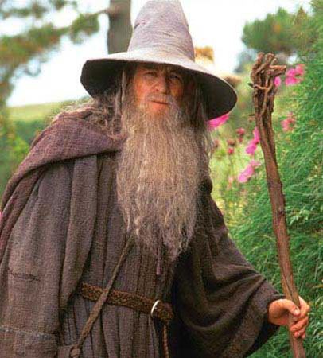
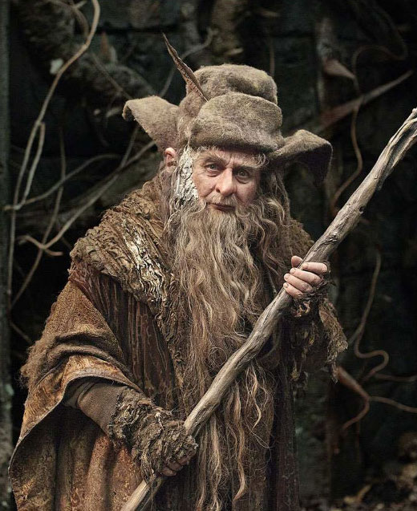

O Senhor dos Anéis
O Senhor dos Anéis é um livro de alta fantasia, escrito pelo escritor britânico J. R. R. Tolkien. Escrita entre 1937 e 1949, com muitas partes criadas durante a Segunda Guerra Mundial, a saga é uma continuação de O Hobbit (1937).
Hobbit
Um hobbit é uma das criaturas criadas por J. R. R. Tolkien em suas obras (notavelmente O Hobbit e O Senhor dos Anéis), onde têm um papel principal, apesar de à partida serem um povo secundário entre os que habitam a Terra Média.
Elfos
Nas obras de J. R. R. Tolkien, Elfos, auto-denominados Quendi, são uma das raças da Terra Média, baseados nas criaturas lendárias da Mitologia nórdica. São uma raça que, juntamente com os homens formam os "Filhos de Ilúvatar".



Magos
Os Magos, também chamados de Istari, eram originalmente espíritos da ordem dos Maiar, os seguidores do Valar. Estes foram enviados pelos Valar para ajudar os povos da Terra-média contra Sauron, pois ele reuniu suas forças durante a Terceira Idade.

